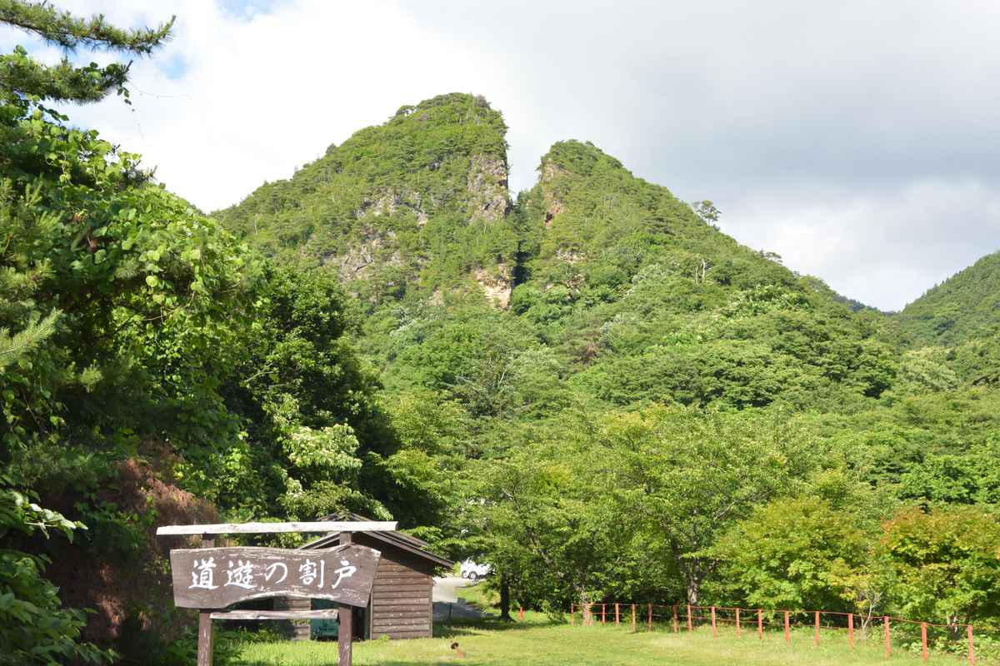
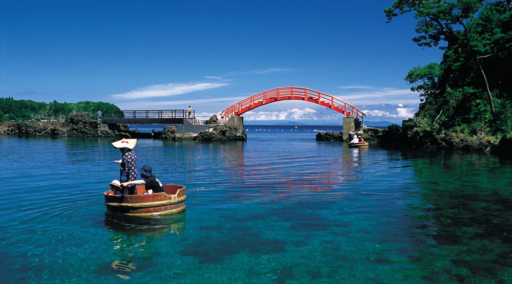

佐渡のおすすめスポット
佐渡金山

かつて日本最大級の金山として栄えた「佐渡金山」。江戸時代から平成まで続いた採掘の歴史は、まさに佐渡の繁栄を支えてきた柱です。現在は史跡として公開されており、当時の坑道や採掘の様子をリアルに再現した展示が魅力。機械化以前の手掘りの様子を再現した「宗太夫坑」や、明治以降の近代的な採掘跡「道遊坑」など、時代ごとに異なる空気感を体感できます。
【見どころ】
江戸時代の採掘現場を再現した人形展示
迫力ある道遊の割戸（どうゆうのわりと）と坑道跡
金の延べ棒に触れる体験コーナー
金塊を使った重さ比べ体験やお土産ショップも充実
所在地
〒952-1501 新潟県佐渡市 下相川 1305
電話
0259-74-2389
佐渡金山公式サイト
たらい舟体験

丸いたらいに乗って海を行く「たらい舟」も名物体験のひとつ。もともとは狭い入り江や岩場で海藻を採るための生活道具として使われていたたらい舟ですが、今では観光体験として大人気。熟練のお姉さんたちが軽やかに操縦する舟に乗って、ゆったりと波に揺られるひとときは、まさに非日常の癒し体験です。
【体験できる主な場所】
小木港周辺（力屋観光汽船など）
海の透明度が高く、魚や海藻が見えることも
舟の操縦体験や記念撮影スポットも人気
所在地
〒952-0604 新潟県佐渡市 小木町 1935
電話
0259-86-3153
さど観光ナビ たらい舟力屋観光汽船